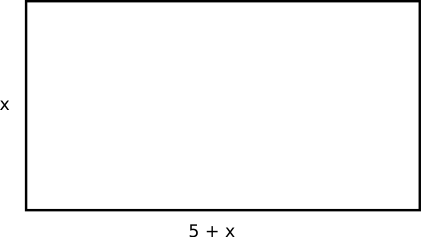
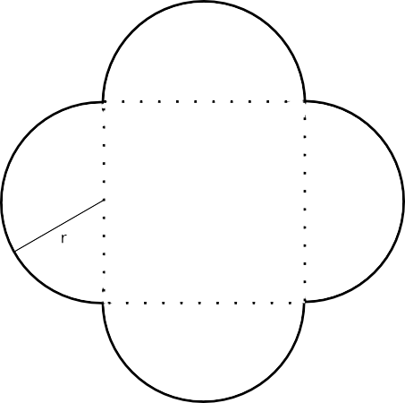

9. Tillämpningar med rotformeln
Efter att vi löst ekvationer med rotformeln är det dags att lösa praktiska problem. I dessa uppgifter bildar du en andragradsekvation, som du löser med hjälp av rotformeln.
Ha skoj!
Exempel 1 På en tomt får ett 100 m2 hus byggas. Vilka blir dimensionerna då huset har formen av en rektangel och den längre sidan är 5 m längre än den kortare sidan?
Lösning
Situationen ser ut som

Arean är sida gånger sida och blir
\(\begin{array}{rclll} 100 & = & x \cdot (x+5) & \\ x^2 +5x -100 & = &0 & a=1, b=5 \textrm { och } c=100\\ x& = & \dfrac{-5 \pm \sqrt{5^2-4\cdot 1 \cdot (-100)}}{2} \\ & =& \dfrac{-5 \pm \sqrt{425}}{2}\\ x = \dfrac{-5 - \sqrt{425}}{2}& \textrm{eller } & \dfrac{-5 + \sqrt{425}}{2} & \\ x = -12,81 & & x = 7,81 & \\ \end{array}\)
Eftersom vi har en sträcka duger endast den positiva roten.
Svar: 7,8 m och 12,8 m
Exempel 2 På en ritning ha ett hus dimensionerna 20 m och 15 m. På grund av bestämmelser bör byggarean minska till 75 %. Vilka är dimensionerna för det mindre huset?
Lösning
Situationen ser ut som

Den ny arean är: \((20-x)(15-x)\)
75 % av den gamla arean är: \(0,75 \cdot 20 \cdot 15\).
Vi får ekvationen: \( (20-x)(15-x) = 0,75 \cdot 20 \cdot 15 \).
Då vi förenklar får vi \( 300-20x-15x+x^2 = 225 \),
och vidare till \( x^2 -35x+75 = 0 \).
Vi får
\(\begin{array}{rcl} x & = & \dfrac{35 \pm \sqrt{(-35)^2-4\cdot 1 \cdot 75}}{2\cdot 1} \\ & = & \dfrac{35 \pm \sqrt{925}}{2} \\ x = \dfrac{35 - \sqrt{925}}{2} & \textrm{eller } & x = \dfrac{35 + \sqrt{925}}{2} \\ x = 2,29 & & x = 32,71 \\ \end{array}\)
32,71 accepterar vi inte för då får vi negativa sträckor.
Svar: Längderna är 17,7 och 12,7 m.
Uppgifter
- Arean för ett rum är 45 m2. Rummet är 4 m längre än brett. Bestäm längd och bredd för rummet.
Vi får ekvationen \(x(x-4)=45\).
Ekvationen har lösningarna \(x=-5\) och \(x=9\).
Bredden av rummet är 5 m och längden är 9 m.
- En strandtomt är 1,0 ha stor (1 ha = 10 000 m2) och har formen av en rektangel. Bestäm längden för sidorna då förhållande mellan sidorna är 1:4.
Vi får att arean har värdet \(x\cdot 4 x = 10000\) som ger att \(x=50\) m. Då är \(4x=200\) m.
Alltså är den kortare sidan 50 m och den längre 200 m.
- Med ett rep som är 150 m långt vill man avgränsa ett område som har formen av en rektangel. Man vill att området är 1 400 m2. Bestäm områdets dimensioner.
Eftersom 150 m rep skall räcka runt hela området får vi att längden + bredden är halva omkretsen, 75 m.
Vi betecknar längden med \( x \). Då är bredden \( 75 - x \).
Vi får ekvationen
\( \begin{array}{rcl} x(75-x) & = & 1400 \\ 75x -x^2 - 1400 & = & 0 \\ -x^2 +75x -1400 & = & 0 \\ \end{array} \)
Vår andragradsekvation är \( x = \dfrac{-75 \pm \sqrt{75^2-4(-1)(-1400)}}{2(-1)} \).
Ekvationen har lösningarna \( x_1 = 40 \) och \( x_2 = 35 \).
Om längden är 40 m är bredden \( 75 - 40 = 35 \) m.
Om längden är 35 m är bredden \( 75 - 35 = 40 \) m.
Vi har samma mått, alltså finns det bara en lösning. Ena sidan är 40 m och den andra är 35 m.
- För ett rektangelformat grönsaksland är längden 4,0 m längre än bredden. Grönsakslandet är 117 m2. Hur många meter staket behöver man för att bygga ett staket runt grönsakslandet?
Vi betecknar bredden med \( x \). Då är längden \( x + 4 \).
Vi får ekvationen \( x (x+4) = 117 \). Ekvationen förenklar vi till \( x^2+4x -117 =0 \).
Rotformeln ger \( x = \dfrac{-4 \pm \sqrt{4^2-4\cdot 1(-117)}}{2\cdot 1} \) som har lösningarna \( x_1 = 9 \) och \( x_2 = -13 \).
Eftersom vi har en längd gäller \( x = 9 \).
Längden staket är \( 2\cdot 9 + 2 \cdot (9+4) = 44 \) m.
- L. At fäster sin get i ett träd och låter geten fungera som en gräsklippare. Hur långt snöre krävs då arean som L. At vill att geten skall klippa är 110 m2? Rita vid behov en bild över situationen.
Området som geten äter av är en cirkel. Arean för en cirkel är \(\pi r^2\).
Vi får ekvationen \(110 = \pi r^2\) som har lösningen \(r=\sqrt{\dfrac{110}{\pi}} = 5,92\) m.
- Formen av en gammal romersk festsal framgår ur bilden nedan.

Bestäm dimensionerna för festsalen då totala arean är 1 000 m2 med en tiondels meters noggrannhet.
Vilka geometriska figurer består salen av?
Du kan bra lösa ekvationen på GeoGebra. Kom ihåg att använda dig av kommandot nlös.
Vi har 4 st halvcirklar och en kvadrat. Arean för en cirkel är \(\pi r^2\) och arean för kvadraten är \((2r)^2\).
Vi får ekvationen
\(\begin{array}{rcl} 2\cdot \pi r^2 + (2r)^2& =&1000 \\ 2\pi r^2 +4r^2 & =& 1000 \\ r^2(2\pi+4) & =& 1000 \\ r^2 & =& \dfrac{1000}{2\pi+4} \\ r & =& \sqrt{ \dfrac{1000}{2\pi+4}}\approx 9,86 \\ \end{array}\)
Cirkeln radie är 9,9 m och kvadratens sida 19,7 m.
- En bild i en tidning har dimensionerna 5 x 8 cm. Man förstorar den så att proportionerna hålls konstanta och så att arean blir dubbelt så stor. Hur långa är sidorna för den förstorade bilden?
Vi får att \((5+x)(8+x) = 2\cdot 5\cdot 8 \) som har lösningen \(x=\dfrac{-13 \pm \sqrt{329}}{2}\). Alltså är \(x=2,6\) cm.
Sidorna är 7,6 och 10,6 cm.
- Runt en rektangulär plantering vill man bygga ett staket. Till förfogande finns material för 30 m staket. Hur långa blir sidorna för staketet då arean blir 20 m2?
Vi namnger längden med \(x\) och bredden med \(y\). Arean får uttrycket \(2x+2y=30\) och \(xy=20\).
Ekvationssystemet har lösningarna \(x=1,48\) och \(y=13,52\) och \(x=13,52\) och \(y=1,48\).
Kortare sidan är 1,5 m och den längre 13,5 m.
- En målning som är 120 cm bred och 80 cm hög vill man rama in i en förgylld ram. Det finns bladguld för 0,70 m2. Hur breda kan ramen högst vara?
Vi använder oss av dm. 120 cm = 12 dm, 80 cm = 8 dm och 0,702 = 70 dm2.
Vi betecknar bredden för ramen med \( x \).
Vi har följande situation:
Storleken av området som skall förgyllas är \( (12+2x)(8+2x)-8 \cdot 12 \).
Vi får ekvationen \( (12+2x)(8+2x)-8 \cdot 12 = 70 \). Vi förenklar den till \( 4x^2+40x-70 = 0 \) som är samma sak som \( 2x^2+20x-35 = 0 \).
Insättning i rotformeln ger \( x = \dfrac{-20 \pm \sqrt{20^2-4\cdot 2(-35)}}{2\cdot 2} \).
Vi får lösningarna \( x_1 = 1,5 \) och \( x_2 = -11,5 \).
Eftersom sträckan inte kan vara negativ så skall kanten vara 1,5 dm, alltså 15 cm.
Det lönar sig att kontrollera svaret, \( (12+2\cdot 1,5)(8+2\cdot 1,5)-12\cdot 8 = 69 \) som är bra.
- En lekpark, som har formen av en kvadrat, byggs och beläggs med tartan och får ett staket runt omkring sig. Totalt får projektet kosta 15 000 €. Hur stor area får lekparken då 1 m^2 tartan kostar 120 € och 1 m staket 50 €?
Vi namnger längden med \(x\). Priset för tartan blir \(120\cdot x^2\) och priset för staketet är \(50 \cdot 4 x\).Vi får ekvationen \(120\cdot x^2+50\cdot 4 x =15000\) som har lösningarna \(x= -12,04\) och \(x=10,38\) .
Dimensionerna för parken är 10,4 m x 10,4 m. Arean är ca 110 m2.
- En vägg skall förses med ett kakelmönster som består av 5 kakel lodrätt och 8 kakel vågrätt. Kaklen har dimensionen 15 x 15 cm. Hur stora springor bör man sätta mellan kaklen då det endast finns spackel för 4,1 dm2?
Rita bild och fundera. Hur bildas fogdarna?Det bildas fogdar på tre olika ställen. Under, bredvid och mellan fyra kakel.
Antal Total mängd Area för en fogd Under 4 st per kolumn \(4 \cdot 8=32\) \(15 \cdot x\) Bredvid 7 st per rad \(7 \cdot 5 =35\) \(15 \cdot x\) Mellan fyra kakel 7 st per rad \(7 \cdot 4 = 28\) \(x^2\) Total mängd spackel är 4,1 dm2 = 410 cm2.
Vi får ekvationen \(32\cdot 15x + 35\cdot 15x + 28x^2 = 410\) som har lösningarna \(x=-36,30\) och \(x=0,4034\).
Avståndet mellan två kakel skall vara 0,4 cm för att spacklet skall räcka.
- Formen av en gammal romersk festsal framgår ur bilden nedan.